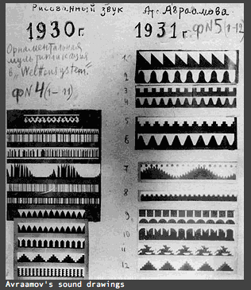
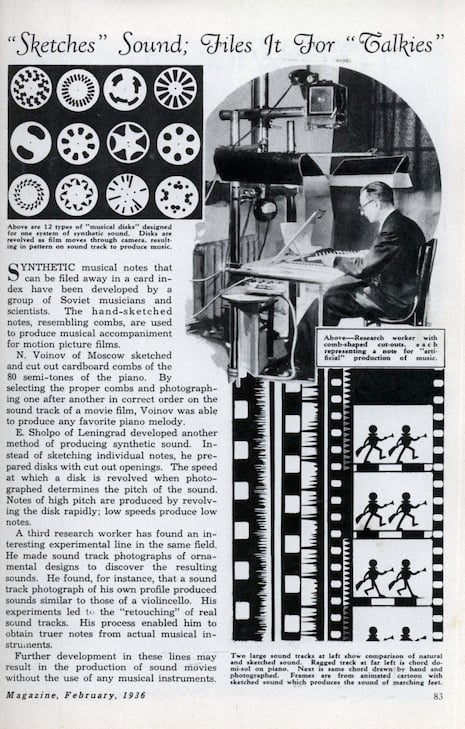
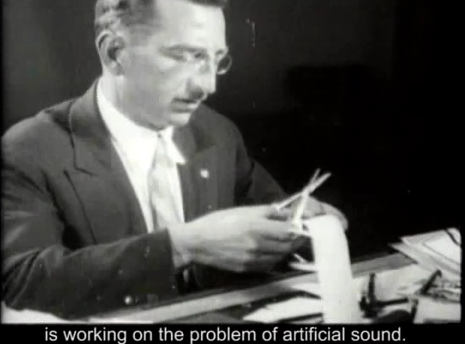

Nikolai Voinov was a Soviet animator working in Leningrad who developed what he called "paper sound", a technique of creating audio by drawing geometric shapes directly onto the optical soundtrack strip of 35mm film. The sound was not recorded. It was drawn.
Geometric patterns translated into vibration. Waveforms rendered as marks on paper, then read by a light beam and converted to an electrical signal. The visualizer answers this logic: form and frequency as the same thing, just perceived differently.
His 1932 film set to Rachmaninoff's Prelude in C# minor paired this optical sound technique with animated imagery synchronized to the music. It was among the earliest instances of constructed, synthetic sound in cinema, decades before the vocabulary of electronic music existed.
Voinov bypassed the microphone entirely. Where conventional recording captures sound that already exists in air, paper sound manufactures it from scratch, a precursor to every subsequent form of sound synthesis, from oscillators to digital signal processing.
The Soviet avant-garde of the early 1930s was deeply engaged with the relationship between image and sound, between visual geometry and acoustic form. Voinov's work inhabited this intersection literally, making the two indistinguishable at the point of production.
What you hear is geometry. What you see is geometry. In Voinov's process, they were the same marks, the same hand-drawn lines on the same strip of film, read first by the projector and then by the ear.